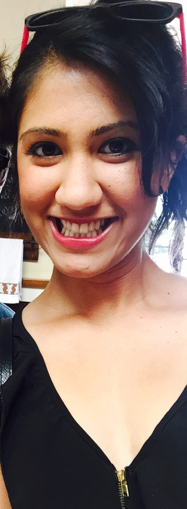

Background
Hi World! I am originally from Vancouver, Canada  #canadianpride! and I'm currently living in the beautiful (and extremely expensive) city of San Francisco, California! I completed my four years of undergrad at UCSD and received a B.S. in Cognitive Science with a specialization in Neuroscience. After I graduated in 2013, I joined Teach For America and served as an 11th grade chemistry teacher in South Central, Los Angeles. I love my students through and through and continue to be an extremely passionate advocate for social justice. So much so that I pursued a Masters in Urban Education from UCLA #gobruins! I love what I do, and even though my skillset is all over the place, I hope to find some way to intertwine everything I love into becoming a world class junior developer through my career at Dev Bootcamp!
#canadianpride! and I'm currently living in the beautiful (and extremely expensive) city of San Francisco, California! I completed my four years of undergrad at UCSD and received a B.S. in Cognitive Science with a specialization in Neuroscience. After I graduated in 2013, I joined Teach For America and served as an 11th grade chemistry teacher in South Central, Los Angeles. I love my students through and through and continue to be an extremely passionate advocate for social justice. So much so that I pursued a Masters in Urban Education from UCLA #gobruins! I love what I do, and even though my skillset is all over the place, I hope to find some way to intertwine everything I love into becoming a world class junior developer through my career at Dev Bootcamp!

Hobbies & Interests
If I could do anything, I would retire now and travel the world. I love acquiring new experiences and exploring different cultures, but unfortunately, I can't retire and backpack the globe just yet. So I make do with cooking , which obviously means I love to EAT! Of my two years in Los Angeles I was on a mission to find the best tacos in LA (taco trucks- specifically the one on Sunset and Echo Park- definitely take the win). Unfortunately with my love for cooking and eating comes the inevitable need for exercise. While I enjoy kick boxing and yoga I have a love/hate relationship with running . Throughout grade school I always hated running, it was the most difficult thing for me to do- not that I was ever a chubby kid, to be honest I as a pretty scrawny Indian girl growing up, but I just didn't have any stamina and would find any excuse to get out of running the mile every Friday during P.E. So one day about two years ago I told myself, if I could find a way to conquer and become good at the most difficult thing I can think of, then I could do anything. So I started running. Oh man I hated it so much I couldn’t even keep a jog for more than five minutes. I pushed myself (and got a few iPhone apps to yell at my for motivation) and got to a point where I was running about five miles a day. My goal was to compete in a 5K, to be honest I've been on and off with running as of recent, but I'd still like to complete one to prove to myself that I can do it.